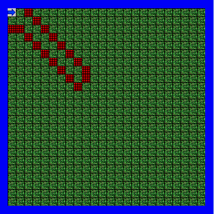
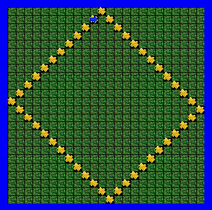
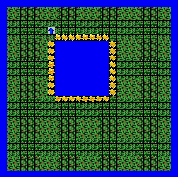
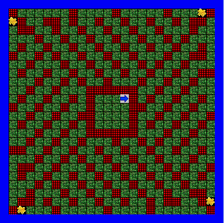
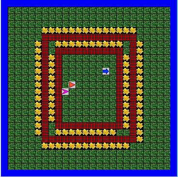
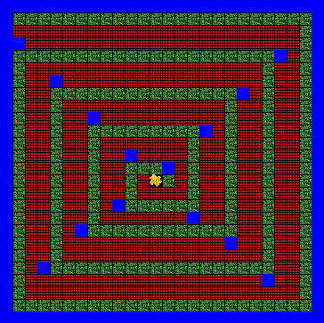
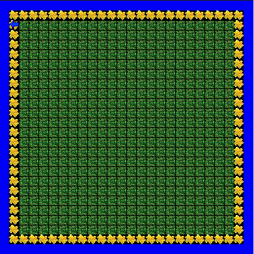

Jeroo Unit 1


Description:
Unit 1 was an introduction to Jeroo. We completed 4 different Jeroo labs to learn about how to create a new Jeroo, and the basic Jeroo methods. For example, with the Diamond lab, we learned to use the basic pick(); and hop(); methods to move Jeroo and plant flowers to create diamond. With the fenced in lab, we were able to thouroughly understand how to make the Jeroo change direction to avoid the nets.
Concepts Learned:
- Creating a new Jeroo
- Set the pre-conditions: number of flowers, direction, and location
- Basic Jeroo Methods: pick(); and hop();
- Learned how to make the Jeroo change direction with the turn(RIGHT);turn(LEFT); methods
Jeroo Unit 2


Description:
Unit 2 allowed us to practice what was learned in Unit 1 as we had to use what we previously learned to solve more complicated labs. For example, in the make a box lab, we needed to create a box by having a Jeroo plant four flowers and hop. Most of the Jeroo 2 labs allowed us to get more experienced with how to approach and solve each problem using programming.
Concepts Learned:
- Create and call methods
- Behaviors, Movement, Location: hop(); plant(); pick(); toss();
turn(RIGHT); turn(LEFT);
Jeroo Unit 3


Description:
In Jeroo unit 3, we learned to make the codes in Unit 2 shorter and more concise using loops. For example, in the lockup lab we had to have the Jeroos clear the fences and pick up each flower using while loops and if statements. In Unit 2, we were using the basic methods repeatedly. In other words, if we wanted a Jeroo to plant a box of flowers then we had to write the plant(); and hop(); methods several times. In Unit 3, the loops allowed us to shorten the code by making it check a condition and do the actions as long as the condition was true.
Concepts Learned:
- While loops
- If statements
Jeroo Unit 4

Description:
Jeroo Unit 4 allowed us to consolidate our previous knowledge of Jeroo. We also learned about If/Else statements. We were able to practice using while loops and we learned to make a program stop, by including another statement to make the while loop stop. We also learned about recursion and how to call methods inside methods.
Concepts Learned:
- While Loops
- if statements and if/else statements
- Recursion